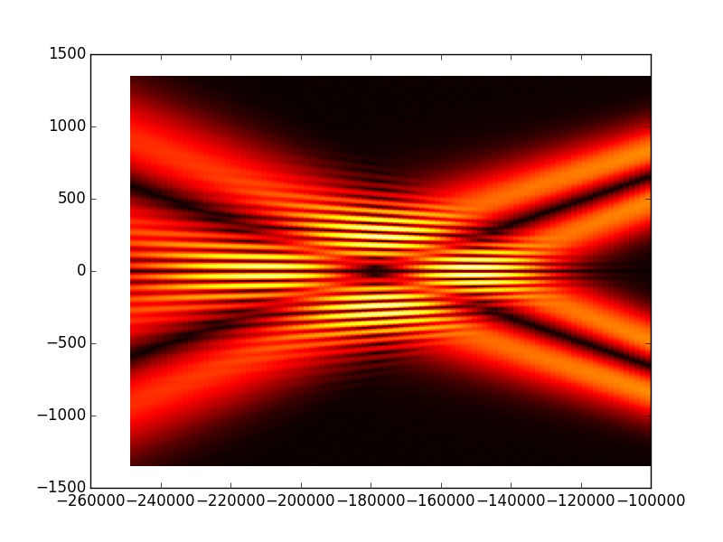
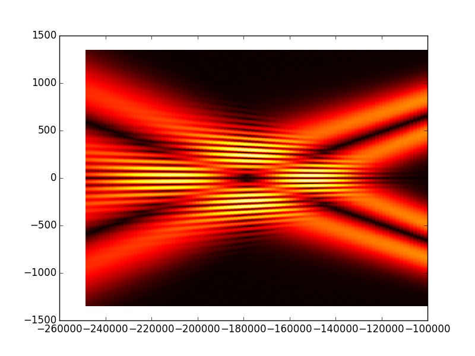

Tutorial 5 - An advanced cavity example ‘Bessel-Gauss’ cavity¶
Small introduction¶
In this tutorial we will design and calculate the eigenmodes of an advanced type of laser cavities called Bessel-Gauss cavities. This class of cavities support Bessel-Gauss beams which offer some interesting properties, for example an extended depth of field with high intensity sometimes called non-diffracting region and annular intensity distribution in the far field. These properties make this class of beams very interesting for several applications such as biomedical imaging, particle trapping, strong-field applications...etc. Well, I hope that this small introduction motivates you to learn more about these cavities. In the tutorial we will take the design studied in this open access paper [Schimpf2012] which is a good one (I find) to learn more about Bessel-Gauss beams and cavities and can be downloaded here ), this way we can compare the results obtained using OpenCavity with those of the paper. Lets start with the scheme of the cavity:

As we can see this cavity contains concave mirror with radius of curvature R2=250mm and a conical reflector with base angle \(\alpha=0.5°\). the cavity length Lc=78mm. This results in a ring-shaped mode with radius of 1.5mm at the first mirror. For more details about how to calculate the stability of such a cavity take a look at the paper. To define this cavity we use general definition using ABCD transfer matrix and a phase mask to introduce the conical phase function, using subsystems cascading as shown in Tutorial 3 - using apertures and phase masks as follows:
Cavity design using OpenCavity¶
Entering the cavity parameters and transfer matrices of the subsystems
In [1]: import opencavity.modesolver as ms
In [2]: from opencavity.propagators import FresnelProp
In [3]: import numpy as np #import numerical Python
In [4]: import matplotlib.pylab as plt # import matplotlib to plot figures
In [5]: R1=1e18; R2=250*1e3; Lc=78*1e3; npts=1000; a=2700; # cavity parameters
In [6]: M1=np.array([[1,0 ],[-2/R1, 1]]); #plane mirror M1
In [7]: M2=np.array([[1, Lc],[0, 1]]); #propagation distance Lc
In [8]: M3=np.array([[1, 0],[-2/R2, 1]]); #concave mirror M2
In [9]: M4=np.array([[1, Lc],[0, 1]]); #propagation distance Lc
In [10]: M11=M2.dot(M1); M22=M4.dot(M3); # sub-system 1 & sub-system 2
In [11]: A11=M11[0,0]; B11=M11[0,1]; C11=M11[1,0]; D11=M11[1,1] # getting the members of subsystem 1 matrix
In [12]: A22=M22[0,0]; B22=M22[0,1]; C22=M22[1,0]; D22=M22[1,1] # getting the members of subsystem 2 matrix
Creating the cavity-subsystems
In [13]: sys1=ms.CavEigenSys(wavelength=1.04); # working wavelength 1.04 micron
In [14]: sys2=ms.CavEigenSys(wavelength=1.04);
In [15]: sys1.build_1D_cav_ABCD(a,npts,A11,B11,C11,D11) #
In [16]: sys2.build_1D_cav_ABCD(a,npts,A22,B22,C22,D22) # to reinitialize the sub-system
Creating the axicon function with base angle =-0.5°, sys.k is the wave vector, and remember that all the fields are not spaced linearly see (Notes on vectors spacing in OpenCavity)
In [17]: theta=-0.5*3.14/180;# reflector is equivalent to refractive axicon with 2 x theta
In [18]: T_axicon=ms.np.exp((1j*sys1.k)*2*theta*(ms.np.sign(sys1.x1))*sys1.x1)
Applying the axicon function and solve and show the modes
In [19]: sys1.apply_mask1D(T_axicon)
Applying 1D Mask...
Mask applied.
In [20]: sys1.cascade_subsystem(sys2)
systems cascaded.
In [21]: sys1.solve_modes()
running the eigenvalues solver...
In [22]: sys1.show_mode(0,what='intensity')
In [23]: sys1.show_mode(0,what='phase')
In [24]: l,tem00=sys1.get_mode1D(0)
In [25]: print 1-np.abs(l)**2 #round trip losses
0.0754566450443
{kind=link}

The first thing we can notice is that the mode contains two lobes, this is because it has a ring-shaped intensity distribution. And the second thing is the conical component in the phase. The obtained mode is identical to the result of paper (Fig 6-a) and the lobe spacing is the one we expected :1.5mm (1500 micron in the figure). Lets see the high order modes to complete the results of the (Fig 6).
In [26]: sys1.show_mode(2,what='intensity')
In [27]: sys1.show_mode(4,what='intensity')


To see the high intensity region of these beams we use the FresnelProp() module presented in Tutorial 4 - Calculating the output beam, but this time we use a new function
propsys.yz_prop_chart(z_min,z_max,n_step,x) that calculates the propagated beam in n_step successive planes from z_min to z_max and x is the planes
abscissa.
However in this cavity arrangement the mode has already ring-shape at the first plane and is diverging, thus the high intensity region is behind the beam
so to see it we enter negative propagation distance (to follow the paper), obviously this does not have physical meaning in real word but mathematically it means that we merely
invert the time axis, or to consider a beam propagating from the right to the left.
In [28]: propsys=FresnelProp() # create a propagator object
In [29]: propsys.set_start_beam(tem00, sys1.x1)
In [30]: d=-172.0e3
In [31]: M=ms.np.array([[1,d ],[0, 1]]);
In [32]: propsys.set_ABCD(M)
In [33]: propsys.yz_prop_chart(-250e3,-100e3,100,sys1.x1/2) # z_min=-250, z_max=-100, n_planes=100
In [34]: plt.set_cmap('hot')
In [35]: propsys.show_prop_yz()
# propagate the second mode
In [36]: l,tem02=sys1.get_mode1D(2)
In [37]: propsys.set_start_beam(tem02, sys1.x1)
In [38]: propsys.yz_prop_chart(-250e3,-100e3,100,sys1.x1/2)
In [39]: propsys.show_prop_yz()
# propagate the third mode
In [40]: l,tem03=sys1.get_mode1D(4)
In [41]: propsys.set_start_beam(tem03, sys1.x1)
In [42]: propsys.yz_prop_chart(-250e3,-100e3,100,sys1.x1/2)
In [43]: propsys.show_prop_yz()
 

{kind=link}

NB: As we are using Fresnel propagation method we can not calculate the propagation over small distances because this will break the paraxial condition (small angles from the propagation axis) see (to add in the first part ‘before starting’). What we observe is that the high intensity region is behind the conical mirror, after that the beam takes an annular shape and diverges as it propagates. In the next tutorial we will change the cavity design to have the high intensity region after the concave mirror.
The cleaned code¶
# -*- coding: utf-8 -*-
import opencavity.modesolver as ms
from opencavity.propagators import FresnelProp
import numpy as np #import numerical Python
R1=1e18; R2=250*1e3; Lc=78*1e3; npts=1000; a=2700; # cavity parameters
M1=np.array([[1,0 ],[-2/R1, 1]]); #concave mirror M1
M2=np.array([[1, Lc],[0, 1]]); #propagation distance Lc
M3=np.array([[1, 0],[-2/R2, 1]]); #concave mirror M2
M4=np.array([[1, Lc],[0, 1]]); #propagation distance Lc
M=M4.dot(M3).dot(M2).dot(M1) # calculating the global matrix (note the inversed order)
M11=M2.dot(M1); M22=M4.dot(M3); # sub-system 2
A11=M11[0,0]; B11=M11[0,1]; C11=M11[1,0]; D11=M11[1,1] # getting the members of subsystem 1 matrix
A22=M22[0,0]; B22=M22[0,1]; C22=M22[1,0]; D22=M22[1,1] # getting the members of subsystem 2 matrix
sys1=ms.CavEigenSys(wavelength=1.04);
sys2=ms.CavEigenSys(wavelength=1.04);
sys1.build_1D_cav_ABCD(a,npts,A11,B11,C11,D11) #
sys2.build_1D_cav_ABCD(a,npts,A22,B22,C22,D22) #
theta=-0.5*3.14/180;# reflector is quivalent to refractive axcicon with 2 x theta
T_axicon=ms.np.exp((+1j*sys1.k)*2*theta*(ms.np.sign(sys1.x1))*sys1.x1)
sys1.apply_mask1D(T_axicon)
sys1.cascade_subsystem(sys2)
sys1.solve_modes()
sys1.show_mode(0,what='intensity')
sys1.show_mode(0,what='phase')
l,tem00=sys1.get_mode1D(0)
print 1-np.abs(l)**2
propsys=FresnelProp() # create a propagator object
propsys.set_start_beam(tem00, sys1.x1)
d=-172.0e3
M=ms.np.array([[1,d ],[0, 1]]);
propsys.set_ABCD(M)
propsys.propagate1D_ABCD(x2=sys1.x1/2) # propagate the beam
propsys.show_result_beam()
propsys.yz_prop_chart(-250e3,-100e3,100,sys1.x1/2)
propsys.show_prop_yz()
propsys.show_prop_yz(what='intensity')
ms.plt.show()
Bibliography
| [Schimpf2012] | Schimpf, D. N., Schulte, J., Putnam, W. P., & Franz, X. K. (2012). Generalizing higher-order Bessel-Gauss beams: analytical description and demonstration. Optics Express, 18(24), 24429–24443. |